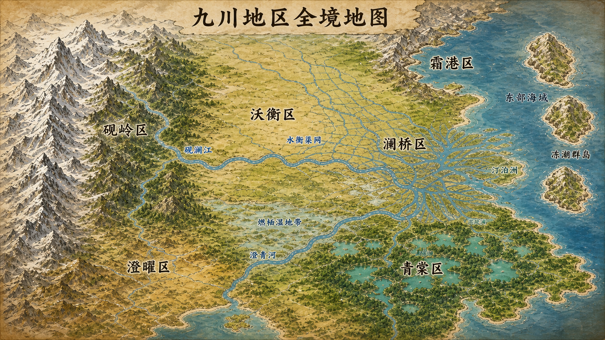

JIUCHUAN · MONSTER COMPENDIUM
穿行九川，遇见妖怪
在人与妖怪共同生活的现代世界里，六个地区有六种脉搏。循着地图，认识它们的城市、山海与栖居其间的生命。
- 06
- 已公开地区
- 34
- 已收录妖怪
- 05
- 基础元素

九川地区 · 探索地图SIX REGIONS OF JIUCHUAN
从一处地方，读懂一片九川
每个区都拥有完整的城市与城乡生活；它们因自然条件、历史路径与生活方式，形成不同的气质。
MONSTER ARCHIVE
妖怪图鉴
当前收录澄曜区与澜桥区的候选物种档案。选择一张卡，查看它的栖息环境、元素与生活习性。
地区
THE WORLD OF YAODOUPAI
妖怪不只是
竞技场上的名字。
九川的妖怪首先是自然生态的一部分；其中一些与居民共居、冲突或合作，也有许多从不进入人类生活。玩家以卡牌记录这些相遇；每一张牌背后，都有一种独立延续的生命。